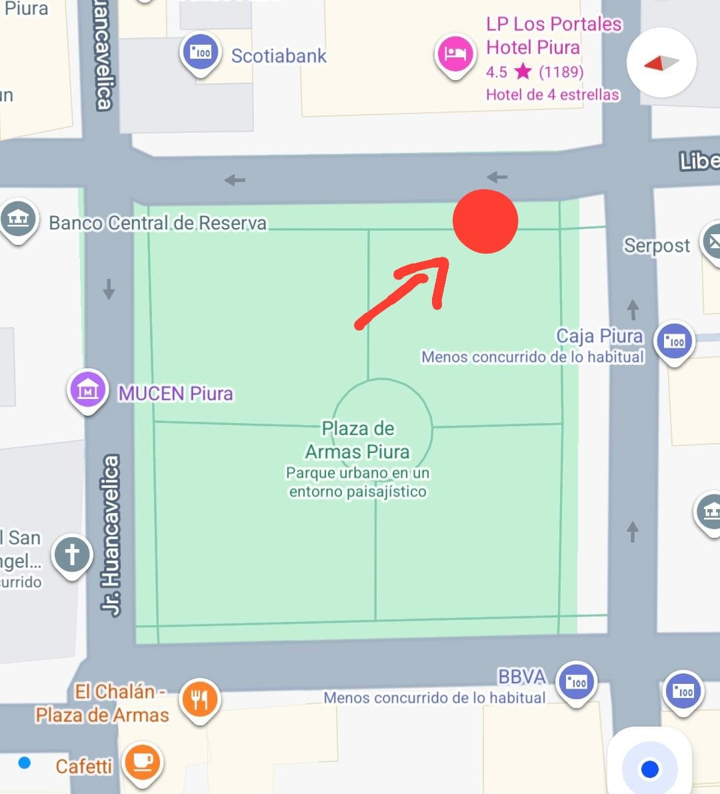

❓ Resolvemos tus dudas
Todo lo que necesitás saber antes de reservar tu mini tour nocturno por Piura.
El punto de encuentro en cada tour será en la plaza de armas, en la calle Libertad, al frente del hotel "Los Portales". Se recomienda llegar con 10 minutos de anticipación.

Sí. El transporte es privado, con aire acondicionado y para máximo 12 pasajeros.
Aceptamos transferencias, Yape/Plin y pago en efectivo al iniciar el tour. Te enviaremos los datos al confirmar tu reserva.
Sí, ofrecemos la opción de reserva privada para que tu grupo disfrute la experiencia de manera exclusiva.
Sí, aceptamos cancelaciones sin penalización si nos avisas hasta 24 horas antes de la salida programada. A partir de ese límite, ya no aplica reembolso porque los servicios (transporte, guía y degustaciones) han sido gestionados.
El reembolso se ejecuta dentro de los 5 días hábiles siguientes a tu solicitud, devolviéndose por el mismo canal de pago utilizado (Yape, Plin, transferencia o efectivo).
Sí. Puedes solicitar un cambio de fecha sin costo adicional siempre que haya cupos disponibles y nos avises con al menos 24 horas de anticipación. Si solicitas el cambio con menos tiempo, se evaluará caso por caso aplicando un fee administrativo.
Reserva tu mini tour nocturno y descubre Piura en pocas horas.
Reservar ahora